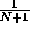

| The Cat in the Hat |
(An homage to Theodore Seuss Geisel)
The Cat in the Hat is a nasty creature,
But the striped hat he is wearing has a rather nifty feature.
With one flick of his wrist he pops his top off.
Do you know what's inside that Cat's hat?
A bunch of small cats, each with its own striped hat.
Each little cat does the same as line three,
All except the littlest ones, who just say ``Why me?''
Because the littlest cats have to clean all the grime,
And they're tired of doing it time after time!
A clever cat walks into a messy room which he needs to clean. Instead of doing the work alone, it decides to have its helper cats do the work. It keeps its (smaller) helper cats inside its hat. Each helper cat also has helper cats in its own hat, and so on. Eventually, the cats reach a smallest size. These smallest cats have no additional cats in their hats. These unfortunate smallest cats have to do the cleaning.
The number of cats inside each (non-smallest) cat's hat is a constant, N. The height of these cats-in-a-hat is  times the height of the cat whose hat they are in.
The smallest cats are of height one;All heights are positive integers.
these are the cats that get the work done.
Given the height of the initial cat and the number of worker cats (of height one), find the number of cats that are not doing any work (cats of height greater than one) and also determine the sum of all the cats' heights (the height of a stack of all cats standing one on top of another).
The input consists of a sequence of cat-in-hat specifications. Each specification is a single line consisting of two positive integers, separated by white space. The first integer is the height of the initial cat, and the second integer is the number of worker cats.
A pair of 0's on a line indicates the end of input.
For each input line (cat-in-hat specification), print the number of cats that are not working, followed by a space, followed by the height of the stack of cats. There should be one output line for each input line other than the ``0 0'' that terminates input.
216 125 5764801 1679616 0 0
31 671 335923 30275911